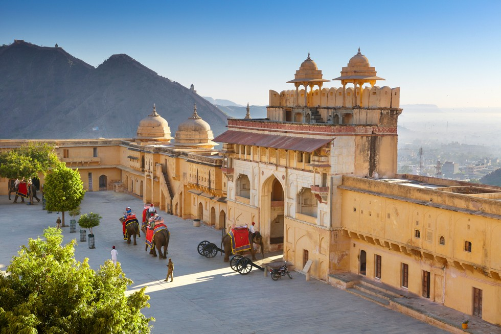
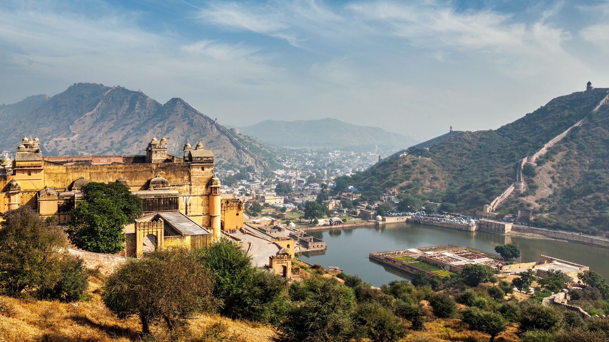

Also called the Pink City, Jaipur is the capital of the royal state of Rajasthan. Along with Delhi and Agra, Jaipur forms the Golden Triangle and hails as one of the most famous tourist circuits in the country.
Rajputs ruled Jaipur for many centuries and developed as a planned city in the 17th century AD. With the old city surrounded by walls and gates decorated with drawings on the backdrop of a beautiful pink hue, Jaipur, the pink city, successfully retains its old-world charm. Home to a few UNESCO World Heritage sites, including Amer Fort and Jantar Mantar, Jaipur holds many magnificent forts, palaces, temples and museums and brims with bustling local bazaars where you can shop to your heart's content. The city is also very well known for its local food, and the most famous dishes include the Ghewar, Pyaaz Kachori and Dal Baati Churma. The city also hosts the Jaipur Literary Festival, which is Asia's biggest festival of its kind.
One of the largest cities in India, Jaipur is also home to all the modern amenities with some of the most exotic hotels and resorts in the world. The city boasts an international airport and is also very well connected by rail and road. This makes Jaipur the gateway to Rajasthan - the starting point for places to visit in the interiors of the state. The metro, local buses, shared tuk-tuks, auto-rickshaws and taxi aggregator apps, including Uber and Ola, solve the commute problem in the city quite comfortably.